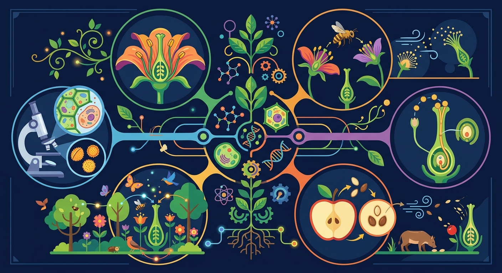

📑 知识图谱
🤝 AI 学伴
📚 课程内容
Gallery
|
🗺️ 知识地图
🛤️ 学习路径
TeachAny
学习目标
花的结构
传粉方式
风媒与虫媒
标注练习
练习题
小结
⏮
▶
⏭
0:00 / 0:00
🎧 听讲解
🌸 生物
七年级下
植物生殖与类群
互动课件
🌸 花的结构与传粉
认识花的各部分结构，理解自花传粉与异花传粉，辨别风媒花与虫媒花

花的结构与传粉
概念
方法
易错
迁移
无字生图 + HTML 中文叠标